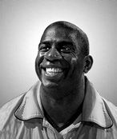

Magic JOHNSON
Earvin "Magic" Johnson Jr. (born August 14, 1959) is an American former professional basketball player and former president of basketball operations of the Los Angeles Lakers of the National Basketball Association (NBA). Often regarded as the best point guard of all time, Johnson played 13 seasons for the Lakers and was honored as one of the 50 Greatest Players in NBA History in 1996. After winning championships in high school and college, Johnson was selected first overall in the 1979 NBA draft by the Lakers. He won a championship and an NBA Finals Most Valuable Player Award in his rookie season, and won four more championships with the Lakers during the 1980s. Johnson retired abruptly in 1991 after announcing that he had contracted HIV, but returned to play in the 1992 All-Star Game, winning the All-Star MVP Award. After protests from his fellow players, he retired again for four years, but returned in 1996, at age 36, to play 32 games for the Lakers before retiring for the third and final time. Johnson's career achievements include three NBA MVP Awards, nine NBA Finals appearances, twelve All-Star games, and ten All-NBA First and Second Team nominations. He led the league in regular season assists four times, and is the NBA's all-time leader in average assists per game, at 11.2. Johnson was a member of the 1992 United States men's Olympic basketball team ("The Dream Team"), which won the Olympic gold medal in 1992. After leaving the NBA in 1992, Johnson formed the Magic Johnson All-Stars, a barnstorming team that traveled around the world playing exhibition games. Johnson became a two-time inductee into the Basketball Hall of Fame—being enshrined in 2002 for his individual career, and again in 2010 as a member of the "Dream Team". His friendship and rivalry with Boston Celtics star Larry Bird, whom he faced in the 1979 NCAA finals and three NBA championship series, are well documented.